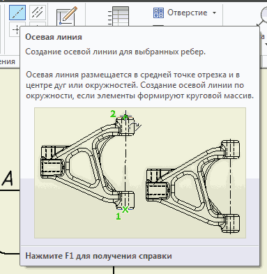
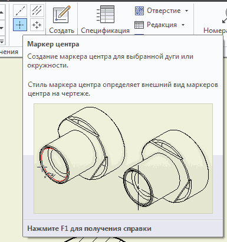

и щёлкнем ЛКМ в месте создания вида. Далее можно продолжать создавать виды или завершить клавишей
Esk.
Можно выполнить поворот вида в нужное положение. Щёлкнем ПКМ в зоне вида и в меню выберем Поворот.
В открывшемся окне поворота вида укажем:
Условие поворота — Линия - горизонтально;
Направление поворота — По часовой стрелке
и щёлкнем ЛКМ по вертикальной линии вида.
Создадим сечение:
команда Сечение;
выбрать ЛКМ вид;
указать крайние точки сечения;
щёлкнуть ПКМ и ЛКМ — Продолжить.
В открывшемся окне задать параметры сечения и выбрать ЛКМ место для его расположения.
Перемещать вид вдоль линий проекционной связи можно ухватившись курсором за рамку вокруг вида.Если нужно перенести вид в любое место чертежа щёлкните по нему ПКМ и выберите Выравнивание — Разорвать.
Создадим осевые линии. Зайдём в меню Пояснения и
выберем Осевая линия.

Укажем ЛКМ средние точки крйних рёбер и после щелчка ПКМ
нажмём Создать.
Выберем Маркер центра...

...и щёлкнем ЛКМ по большой кружности.
Протавим размеры. Выберем Размеры и укажем ЛКМ крайние точки для нанесения размера.Добавим обозначения диаметра к размеру.Сделаем двойной щелчок ЛКМ по размеру. В открывшемся окне курсор установим перед значением размера и выберем в раскрывающемся списке значок диаметра. Нажмём ОК. Аналогично можно добавить значок градуса при указании размера фаски.
Для указания размеров допусков нужно воспользоваться закладкой
Точность и допуск этого окна.
Проставим все размеры.
Доработку чертежа я предпочитаю делать в AutoCAD (BricsCAD). Для этого сохраним копия чертежа в формате .dwg.На этом краткий экскурс на тему Создание модели и чертежа заканчиваю. В следующей главе кратко расскажу о создании металлоконструкций в Inventor.